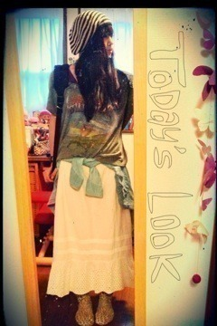

| 2012/09 21 Fri | 235回目*marika |
いつも読んでくださってる方、
初めて読んでくださった方、
コメントしてくださった方、
ありがとうございます！
撮影終わって、ちょびっとだけ
古着屋ぶらりしてきた
 ふふ
ふふ
ふふ
チェックのプリーツの
ロングスカート買いました。
昨日秋物何がほしいって質問で
帽子とアウターって答えてたのに
スカートを買ったという

でも、ピンときたんだ‼
このスカートにシャツと
ベスト合わせて、
ガリ勉みたいになったり、
ライダースジャケット着て
マーチン履いてロックになったり...
難しいようで合わせるの楽しそう♪
また今度載せます

**********
 星好き？
星好き？
 すき！きれい！
メンバーで学校の先生が
すき！きれい！
メンバーで学校の先生が
似合いそうな人はだれですか？
橋本先生。←ななみ
私がさゆにゃんをいじってたら
にゃんが
「あーあー！そーゆーの
いけないんだあ先生に言うぞ」
て言って、ななみに伝えるんだよ

そしたらななみが来て、
「こらーだめでしょー」
って私に言うのー
先生みたいなのー
ぷぅ
 ←
←
←
ホントにこんなおもろくてかわいい妹いたらいいなぁって思うわ(´∀｀)
妹にしていいですか？(笑)
俺の妹になってくれない？(笑)
わーいモテモテー

両方ともうしろに
（笑）がついてるのはなんでや笑
でも、
お兄ちゃんですねー
 ‼わーい
‼わーい
‼わーい
...こんなあほが妹でいいんですかね。
コメントっていつ読んでるん？
反映されて気づいたら、
全部読むよ‼

春の朝の空、夏の昼の空、
秋の夕方の空、冬の夜の空
どれが1番好き？
あー選べない><
やっぱり春かなぁ。。でも、
秋の夕方なんて...ずるいぞ！
ずっと眺めてたいよね。
冬の夜も空気が澄んでていいよね。
少女マンガなんか持ってる？(^-^)v
別マの漫画何冊か持ってます！
今は君届とアオハライドと
別マじゃないけど、
たいようのいえ集めてるよ^^
トイレで本読んだりしますか？
読んじゃうときある笑
イベ移動中、まぁりは
何してすごしてるの?
移動中はまりっかは何してんの～？
メンバーとおしゃべりーか
BloG書くか、寝るか

まりかちゃんは
blog書くの好き？？？（＾－＾）

**********
今日のコーデ

ZURIのニット帽と
Tシャツお気に入り

...
BLTのTシャツ、実は二枚もらったの。
だからゆみ姉と交換したんだあ
 でへ
でへ
でへ
今日ねーゆみ姉にいっぱい
かまってもらってん

真洋にもかまってもらったー
ひっつき虫言われる。
あと、めんどくせえって
言われる笑
なんかおもしろいポーズして！
って言ったら、すぐしてくれた。
ゆみこビいいぃぃぃいム
きゃあ
 ))
))
))
まりか
コメント(93)
2012/09/21 18:12